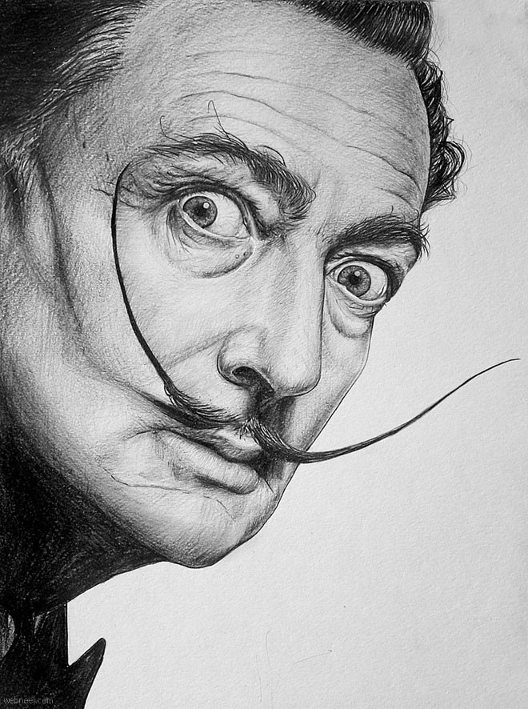
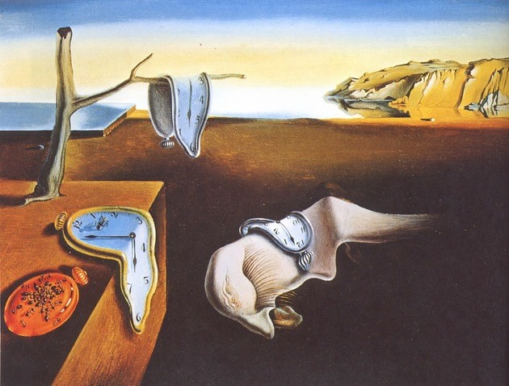
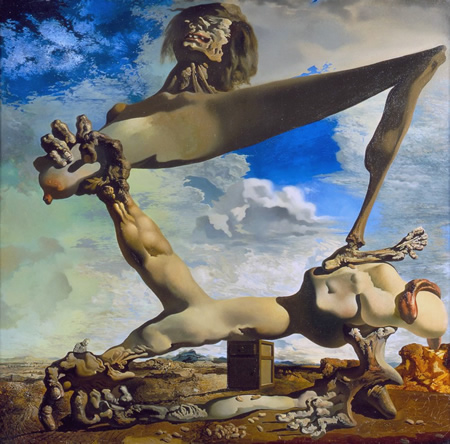
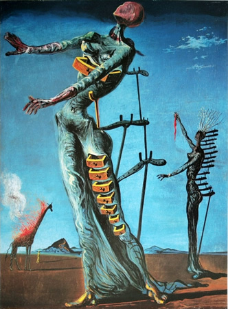
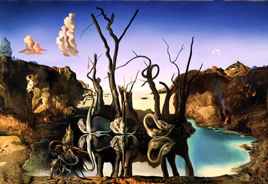
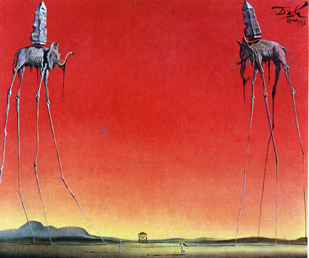

Salvador Dalí

Salvador Felipe Jacinto Dalí i Domènech,Es uno de los artistas más reputados de la historia de España, nació en 1904 y murió a los 85 años en la ciudad natal: Figueras (Cataluña). Salvador Dalí fue el pintor más destacado del movimiento surrealista español. Tras su muerte dejó tras de sí una basta colección de obras, y una nueva forma de entender la estética y el arte.
Excéntrico como nadie, su imagen personal e ideas; todo estaba teñido por su sensibilidad artística.Uno de los rasgos de Dalí que más llamaba la atención era el contraste generado por una personalidad tan peculiar, y la enorme capacidad de trabajo y excelencia técnica, que demostraba constantemente.
La persistencia de la memoria

También se conoce como "Los relojes blandos". Pintado en 1931. Se trata del cuadro más representativo del artista.
Muestra un desierto con 4 relojes, de los cuales 3, están despachurrados por el efecto del tiempo y el calor, según parece.
Construcción blanda con judías hervidas

Composición realizada en óleo, pintada el año 1936, 6 meses antes de que comenzara La Guerra Civil Española.Se considera una obra premonitoria en este sentido, el artista previó los horrores de la guerra que estaba por comenzar.Se encuentra actualmente en el Museo de Arte de Filadelfia, USA.
La jirafa en llamas

Cuadro al óleo sobre tabla, pintado en 1937 por Salvador Dalí.Se trata de un motivo apocalíptico, donde el pintor deja ver toda clase de facetas psicológicas relacionadas con: política, guerra, la mujer y el hombre.
Se encuentra actualmente en el Museo de Arte de Basilea, Suiza.
Cisnes que se reflejan como elefantes

Óleo sobre lienzo pintado en 1937, es uno de los cuadros más notables, donde Dalí completa su composición surrealista con un juego visual magistral. En este caso convierte el reflejo de árboles y cisnes sobre un lago, en elefantes perfectamente delineados.
Los Elefantes

También conocido por su título en inglés "The Elephants". Pintado al óleo sobre tela, el año 1948. Este cuadro recupera las figuras absolutamente fascinantes y oníricas que Dalí había creado hace 4 años, pero esta vez son protagonistas de la obra. El original se encuentra actualmente en el MoMA, New York.